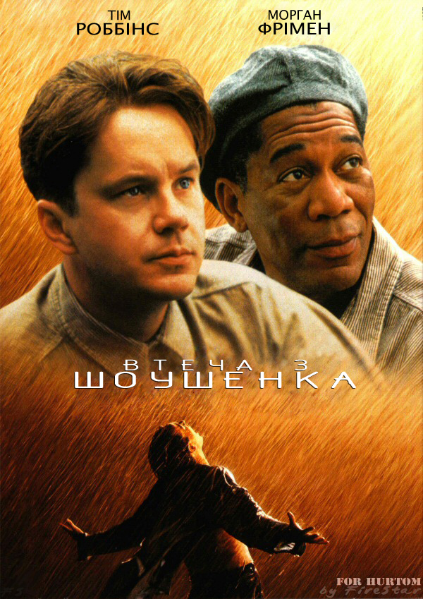
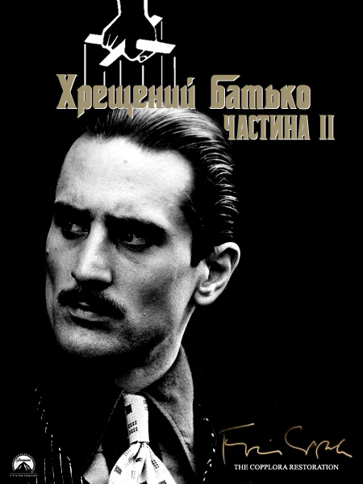
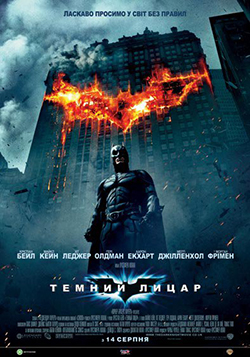
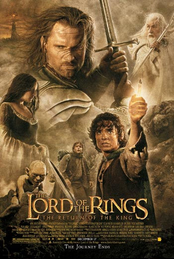
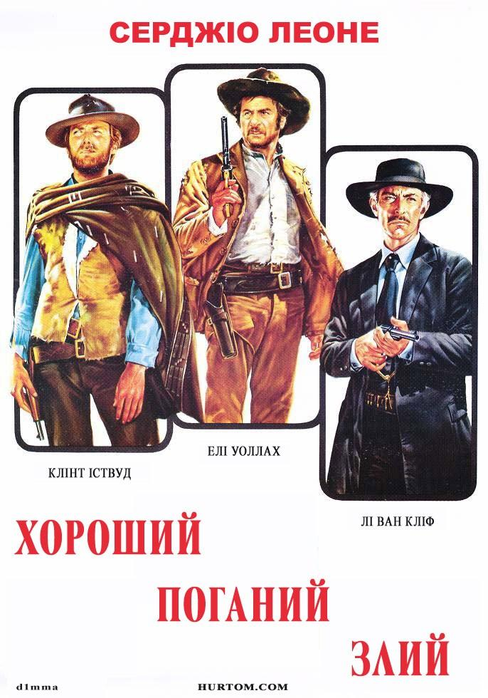
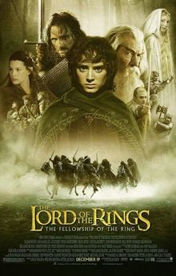

Топ 10 фільмів всіх часів і народів за версією глядачів!
"The Shawshank Redemption"
"The Godfather"
"The Godfather Part II"
"The Dark Knight"
"12 Angry Men"
"Schindler's List"
"The Lord of the Rings: The Return of the King"
"Pulp Fiction"
"The Good, the Bad and the Ugly"
"The Lord of the Rings: The Fellowship of the Ring"

Shawshank Redemption - американський фільм-драма 1994 року, знятий режисером Френком Дарабонтом за повістю Стівена Кінга «Ріта Гейворт і втеча з Шоушенка»
![]()
The Godfather - культова гангстерська драма 1972 року режисера Френсіса Форда Копполи. Екранізація однойменного роману Маріо П'юзо, виданого в 1969 році. Слоган: «Пропозиція, від якої неможливо відмовитися».
The Godfather Part II - гангстерська драма 1974 року, режисера Френсіса Форда Копполи з Аль Пачіно та Робертом Де Ніро у головних ролях. Пряме продовження стрічки 1972 року «Хрещений Батько».
Темний лицар - супергеройський трилер спільного виробництва США і Великої Британії 2008 року від режисера, продюсера та співсценариста Крістофера Нолана, друга частина трилогії Нолана про Бетмена.

12 Angry Men - американський фільм-драма, знятий режисером Сідні Люметом в 1957 році за мотивами драми «12 розгніваних чоловіків» Реджинальда Роуза. За винятком декількох хвилин, всі події відбуваються в кімнаті засідань присяжних. Один із присяжних намагається змінити думку решти щодо вироку.

Schindler's List - американський історичний фільм-драма, знятий за мотивами роману Томаса Кенналі «Ковчег Шиндлера» режисером Стівеном Спілбергом.
The Lord of the Rings: The Return of the King - пригодницько-фентезійний фільм 2003 року, режисера Пітера Джексона. Заснований на книзі Дж. Р. Р. Толкіна «Повернення короля». Це третій фільм із кінотрилогії «Володар перснів», першим був «Хранителі Персня» (2001), другим «Дві вежі» (2002).

Pulp Fiction - культовий художній фільм 1994 року виробництва США, одна з найвідоміших робіт режисера Квентіна Тарантіно. Картина вважається важливою віхою в історії кінематографа, що дала відчутний імпульс розвитку незалежного американського кіно.
The Good, the Bad and the Ugly - фільм Серджо Леоне, що завершує «доларову трилогію» вестернів за участю Клінта Іствуда (попередні стрічки — «За жменю доларів» 1964 року та «На декілька доларів більше» 1965 року). Цей фільм став не лише найвідомішим із когорти так званих «спагеті-вестернів», а й еталоном жанру «вестерн» та дотепер залишається найбільш масштабним і значним вестерном в історії кіно.
The Lord of the Rings: The Fellowship of the Ring - новозеландський пригодницько-фентезійний фільм режисера Пітера Джексона 2001 року. Сценарій за книгою Дж. Р. Р. Толкіна The Fellowship of the Ring (в українському перекладі «Братство Персня»). Це перший фільм із кінотрилогії «Володар перснів», слідом за ним вийшли «Дві вежі» (2002) та «Повернення короля» (2003).